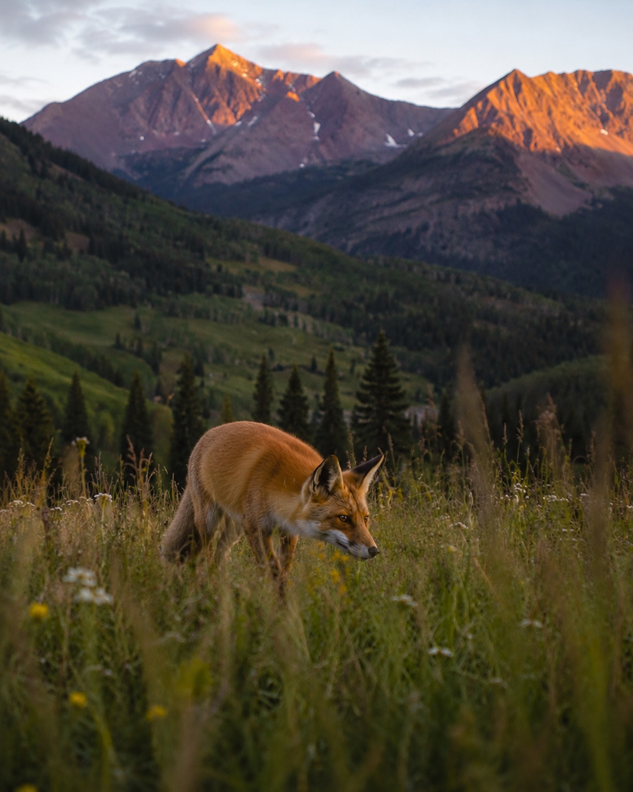
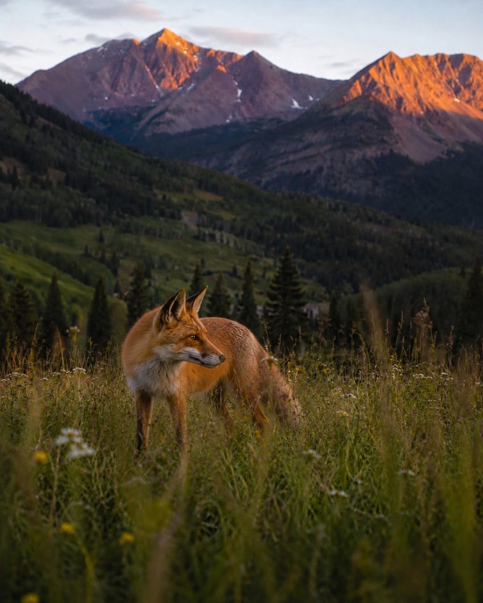

Some ideas arrive before you know what they mean.
I had only recently arrived in Colorado. I had just crossed the Million Dollar Highway, carrying the strange mixture of exhaustion and wonder that comes from a road beautiful enough to demand your full attention.
By the time I found a campsite, the mountains were settling into evening color. The light was moving across the ridges, the air had cooled, and everything around me felt larger and quieter than the life I had left behind.
Something moved in the grass

I set my camera down and started photographing the mountains, trying to hold on to the colors before the light disappeared. Somewhere between one frame and the next, a fox stepped into view.
He was not looking for me. His attention was fixed on a patch of bushes where something small, probably a chipmunk, was moving beneath the branches. His body stayed pointed toward the sound, alert and patient, while one ear remained turned in my direction.
The shutter clicked.
He heard it. I know he heard it. But he seemed determined to pretend I was not there.
Curious without being careless, alert without being afraid.
For a few minutes, we shared the same patch of high country. I watched through the camera while he listened for dinner, shifting through the grass and keeping track of me without ever giving me his full attention.
Nothing about the encounter felt staged or dramatic. He did not pose. He did not look directly into the lens. He simply continued being a fox while I happened to be there.
The moment stayed

Eventually he moved on, disappearing into the timber as quietly as he had arrived. The campsite returned to what it had been before, but the place no longer felt quite the same.
I kept thinking about the fox. Not only the animal, but the way he moved through the landscape. Independent, observant, resourceful, and completely at home in a place that still felt new to me.
That encounter became one of the moments that convinced me to stay in Colorado. It helped turn the state from somewhere I had traveled through into somewhere I wanted to understand. Eventually, Durango became my home base.
Much later, the memory found another form. The fox became part of the identity for Fox & Timber, my creative studio. What began as a quiet campsite encounter was eventually carried into a logo, a name, and a larger idea about building thoughtful things shaped by wild places.
I call him Scout now.
He never knew he was becoming part of anything. He was only listening to the bushes, pretending the camera was not there, and trying to find dinner before the light was gone.
Maybe that is why the memory lasted. Nothing about him felt loud or forced. He simply appeared, held my attention for a moment, and disappeared into the timber.